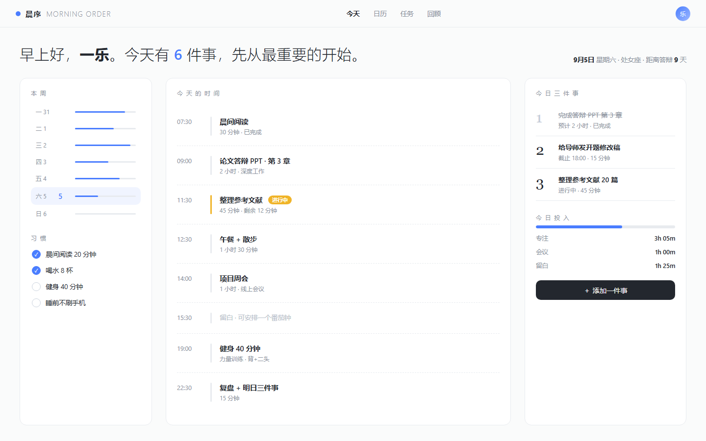
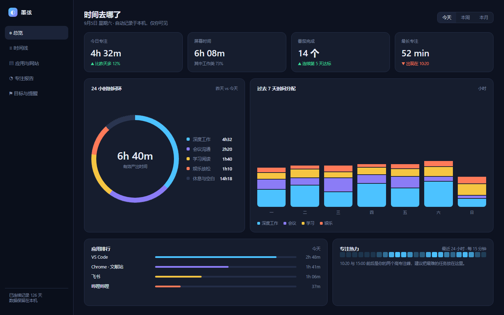
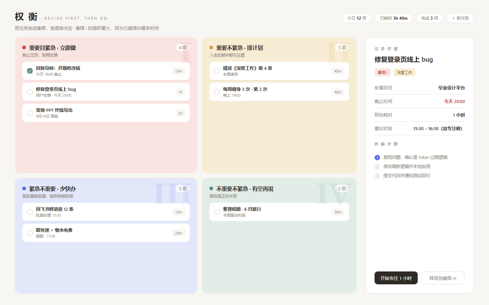
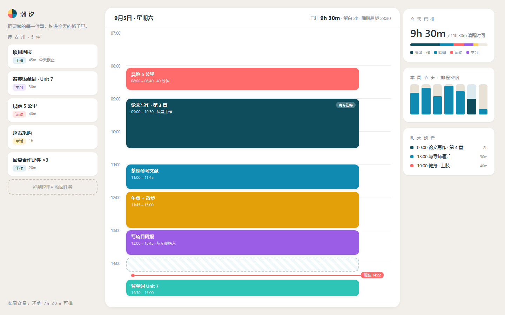
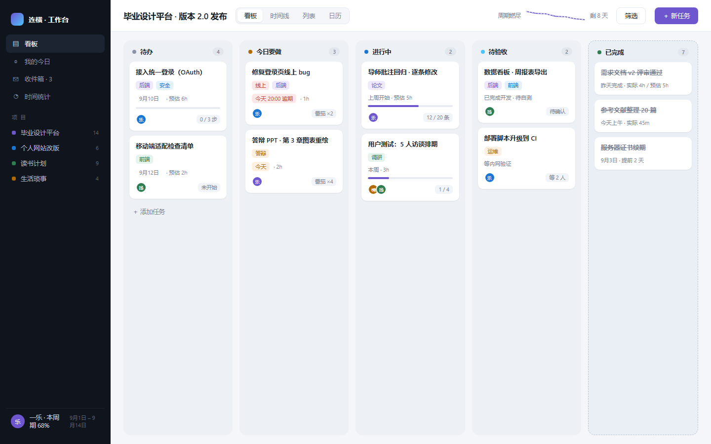
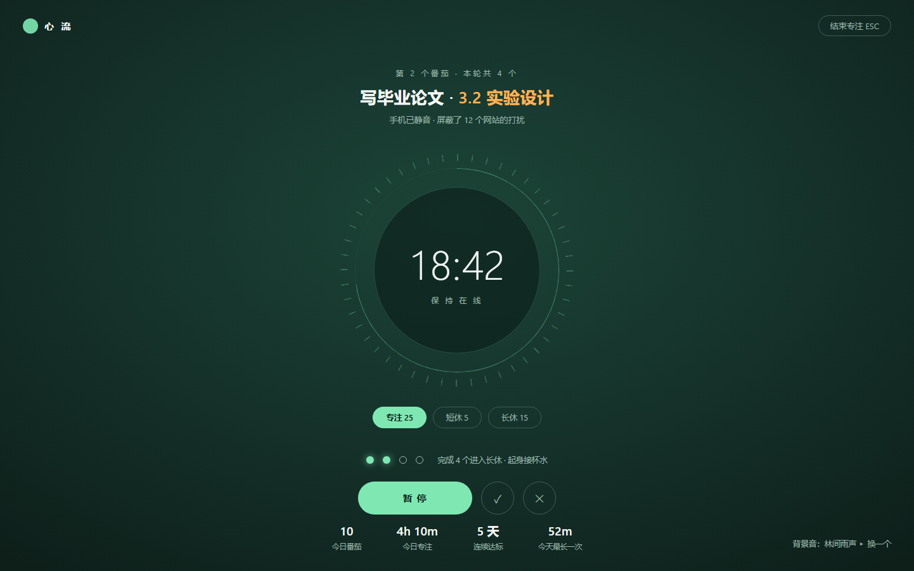
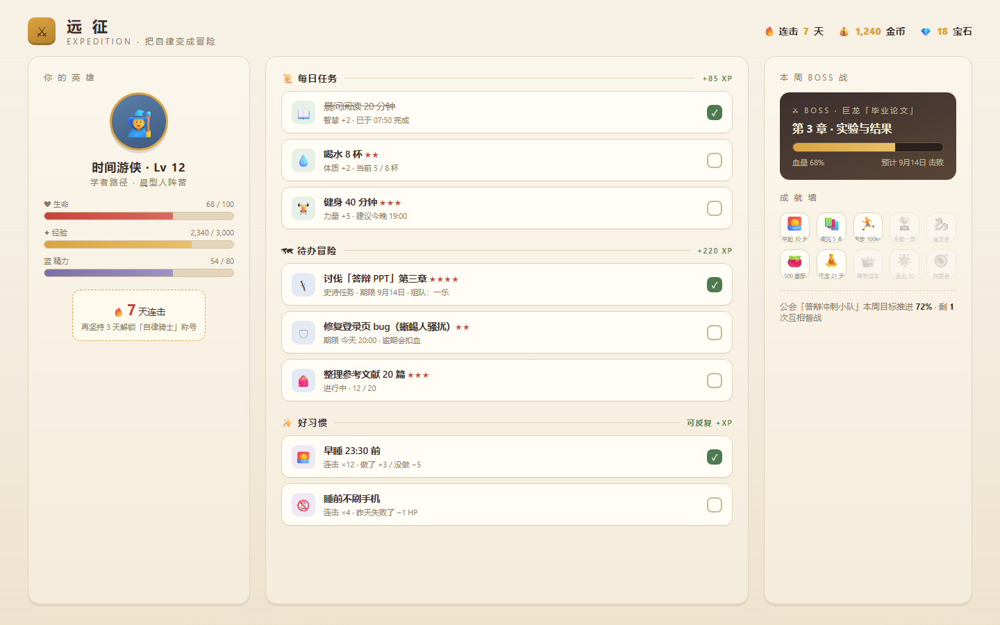
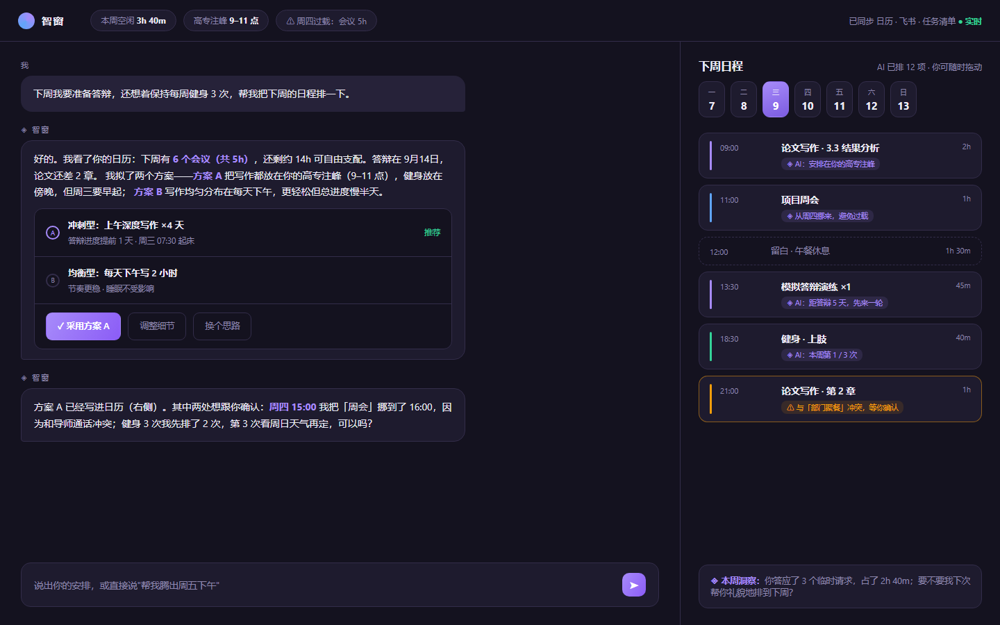
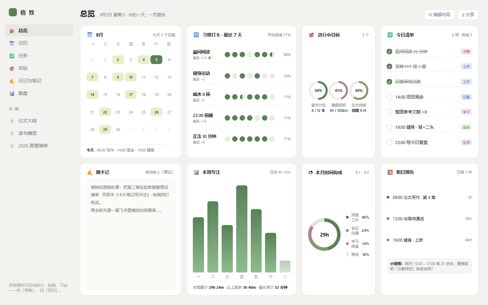
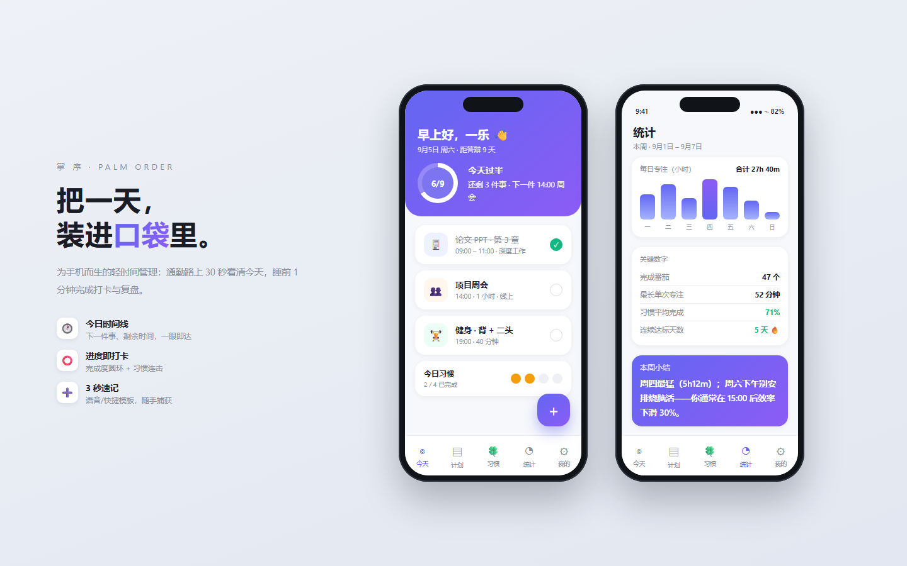

每张都是可交互浏览器原型（1440×900），点击卡片即可打开对应的 HTML 原型细看。它们代表 10 种不同的产品哲学——从「少即是多」到「全自动 AI」，选定的方向会决定后续整个产品的信息架构和气质。

平静克制的白，一天只突出「今日三件事」。像 Things 3：日历为主干，任务做减法。适合想要专注、不爱被打扰的人。

先记录、再优化。时间环、7 天分布、应用排行、专注热力——像 RescueTime/Toggl。适合数据控，想知道时间去哪了的人。

重要/紧急四象限，先决定做什么再动手，象限面积随权重变形。适合事情多而乱、需要强迫排序的人。

左侧任务池拖进一天 24 格，色块即日程，「现在」红线始终可见。像 Sunsama。适合喜欢把一天排得明明白白的人。

项目 + 看板 + 周期燃尽，任务卡带标签、进度、番茄预估，个人也能用出团队的章法。像 Linear/Trello。

全屏沉浸只做一件事：大呼吸环计时、会话序列、今日番茄累计。像 Forest。适合容易分心、需要仪式感的人。

任务变冒险、习惯变连击、论文变 Boss 战，HP/XP/成就徽章一样不少。像 Habitica。适合吃激励这一套的人。

你说目标，AI 排日程：对话式规划 + 每个日程块标注 AI 理由 + 冲突预警。像 Motion。适合不想亲手排日程的人。

Notion 式页面树 + Bento 总览：月历、习惯、目标、清单、笔记、统计一页看完，模块可自由拆装。适合全都要的人。

手机优先：通勤 30 秒看清今天，进度环 + 时间线卡片 + 习惯连击 + 3 秒速记。适合主要在手机上管理生活的人。